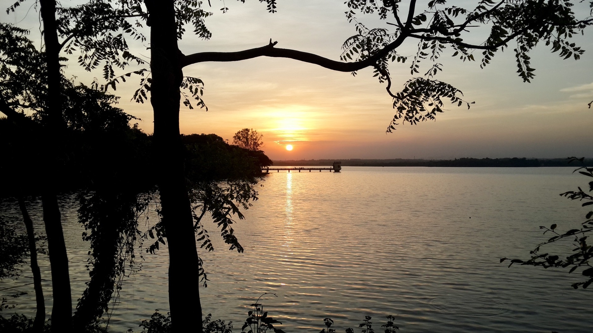
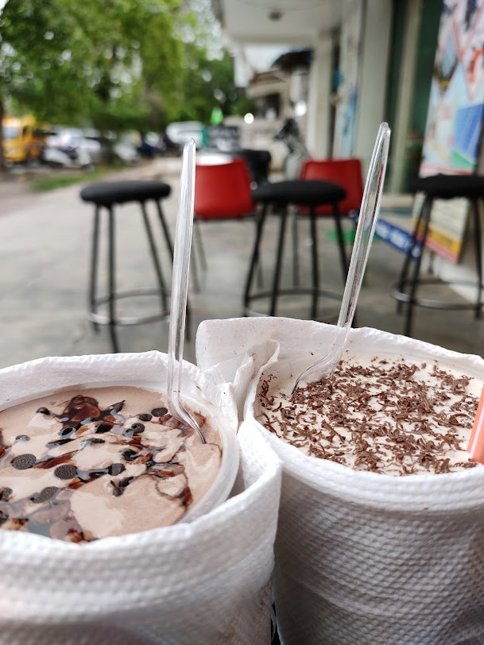
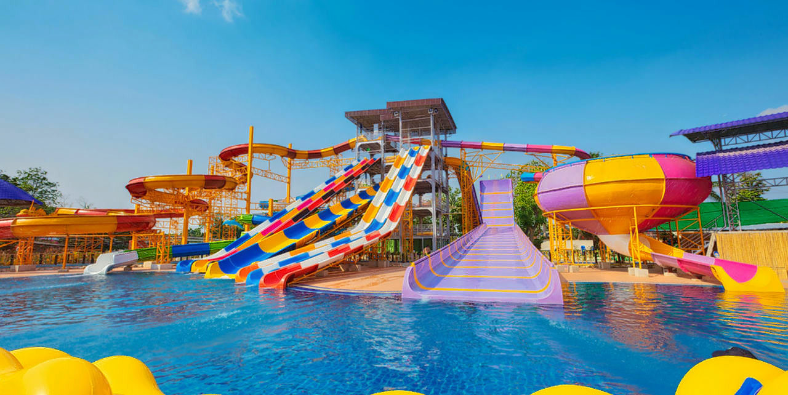

Located on the southwest border of Nagpur in Maharashtra in India, the Ambazari Lake is one of the eleven lakes and largest one that the city of Nagpur houses. Boating facilities in rowboats, as well as self-driven paddleboats, are also available to the visitors, which add to the fun and excitement of visiting the lake and help them to explore the surrounding scenic beauty.
The Ambazari Lake is situated just 6 kilometres away from the western outskirts of Nagpur and is looked after and maintained by the Nagpur Municipal Corporation (NMC). It was initially built in the year 1870, under Bhonsle rule, for supplying water to the city. Just beside the Ambazari Lake, one can find the Ambazari Garden, which is particularly popular amongst the children and doubles up as an amusement park for them. The garden also has pavements walking, a fountain, electric rides and various amusement games for the kid. In fact, the lake derives its name Ambazari, because of this very fact that it is surrounded by mango trees. (The word Amba means mango in Marathi.) The Nag River also originates from here, and the site is indeed a marvel to look at!
Recommendation: Also visit the garden beside Ambazari lake
I just love the quantity, quality, prices and taste of "Frullato" I can't finish one shake at once 😂 They're real "quantity King" Every shake has it's unique taste. Tastes that you've never taste before 😋🤤 if you wanna gift something to someone bring them to this place. Frullato have set the level of beverages👌
Recommendation: Kit-Kat Crunchy
With a number of fun rides, Krazy Castle Aqua Park, like any other amusement and water park has attracted a number of visitors of years now. It counts as one of the popular places to visit in Nagpur and sees a footfall of people from nearby cities as well. The park keeps introducing attractive packages for groups, exclusive offers for corporate offices, school and college students, etc. For a fun-filled day, one can opt to visit this park - best during hot and humid summer days of Nagpur city.
Recommendation: Rain dance floor
